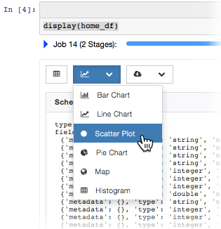
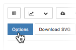
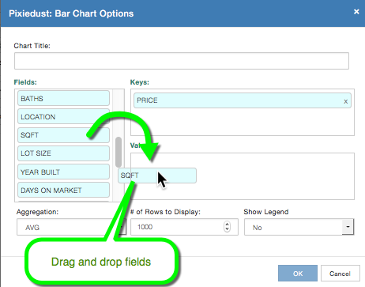

Set Chart Content¶
Click the Chart dropdown menu and choose a chart type:
Configure the content of the chart by clicking the Options button.
The options dialog that opens contains a set of common configuration choices for every chart, plus a set of options specific to the chart type you selected. For example, Bar Chart shows the following options dialog:

To set keys and values, drag fields from the Fields list on the left and drop them where you want them.
Set these common options for every chart:
Chart Title. Enter an apt, descriptive title
Fields. List of available field names derived from your DataFrame schema
Keys. Field(s) to serve as the x-Axis
Values. Field(s) to serve as the y-Axis
- Aggregation. Type of aggregation to be performed on the data. Options include:
- SUM sum or total of values for the key
- AVG average of values for the key
- MIN Min (lowest) of values for the key
- MAX Max (highest) of values for the key
- COUNT number of times the key occurs
Then choose the chart-specific options. Read on to learn how to configure individual chart types.
Note
Errors? Issues? If you get an error or encounter a problem displaying data, start troubleshooting by checking the logs.